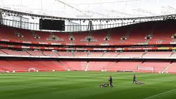

Arsenal Premier League Results 1992-2022
Results and Goalscorers
Results and Goalscorers: Season 2021-2022
Arsenal 2-1 Wolverhampton Wanderers (Nicolas Pepe 82, Jose Malheiro De Se 90+5 (og))
Arsenal 2-1 Brentford (Emile Smith-Rowe 48, Bukayo Saka 79)
Wolverhampton Wanderers 0-1 Arsenal (Gabriel Dos Santos Magalhaes 25)
Arsenal 0-0 Burnley
Arsenal 1-2 Manchester City (Bukayo Saka 31)
Norwich City 0-5 Arsenal (Bukayo Saka 6, Kieran Tierney 44, Bukayo Saka 67, Alexandre Lacazette 84 (pen), Emile Smith-Rowe 90+1)
Leeds United 1-4 Arsenal (Gabriel Martinelli 16, Gabriel Martinelli 28, Bukayo Saka 42, Emile Smith-Rowe 84)
Arsenal 2-0 West Ham United (Gabriel Martinelli 48, Emile Smith-Rowe 87)
Arsenal 3-0 Southampton (Alexandre Lacazette 21, Bukayo Saka 27, Gabriel Dos Santos Magalhaes 62)
Everton 2-1 Arsenal (Martin Odegaard 45+2)
Manchester United 3-2 Arsenal (Emile Smith-Rowe 13, Martin Odegaard 54)
Arsenal 2-0 Newcastle United (Bukayo Saka 56, Gabriel Martinelli 66)
Liverpool 4-0 Arsenal
Arsenal 1-0 Watford (Emile Smith-Rowe 56)
Leicester City 0-2 Arsenal (Gabriel Dos Santos Magalhaes 5, Emile Smith-Rowe 18)
Arsenal 3-1 Aston Villa (Thomas Partey 23, Pierre-Emerick Aubameyang 45+6, Emile Smith-Rowe 56)
Arsenal 2-2 Crystal Palace (Pierre-Emerick Aubameyang 8, Alexandre Lacazette 90+5)
Brighton & Hove Albion 0-0 Arsenal
Arsenal 3-1 Tottenham Hotspur (Emile Smith-Rowe 12, Pierre-Emerick Aubameyang 27, Bukayo Saka 34)
Burnley 0-1 Arsenal (Martin Odegaard 30)
Arsenal 1-0 Norwich City (Pierre-Emerick Aubameyang 66)
Manchester City 5-0 Arsenal
Arsenal 0-2 Chelsea
Brentford 2-0 Arsenal